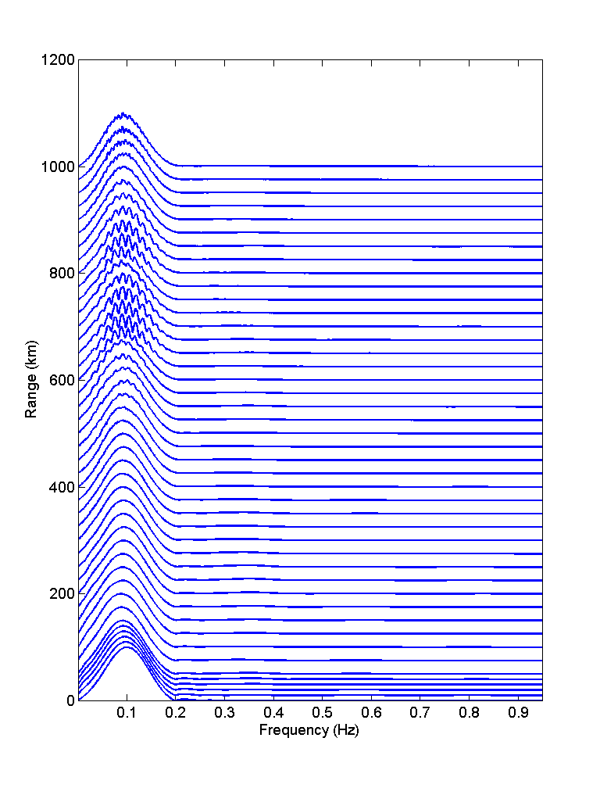
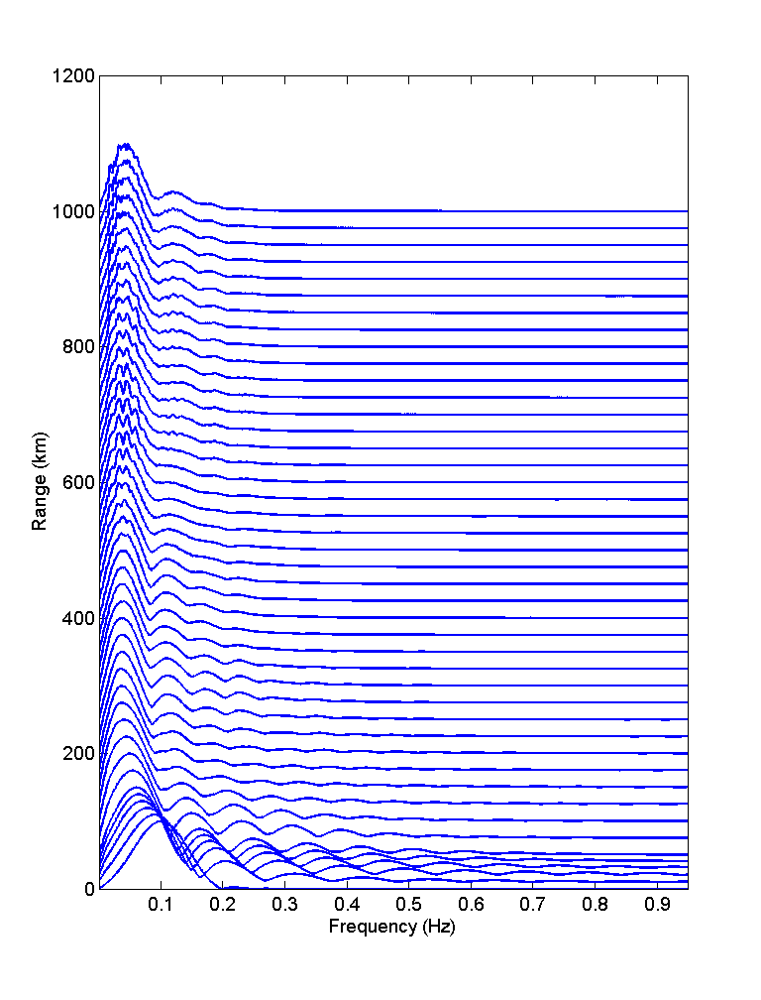

Finally, Figure 11 displays the depth-averaged spectrum for linear and nonlinear propagation for each NPE moving frame.
Enfin, la Figure 11 présente le spectre moyenné sur la profondeur pour les propagations linéaires et non-linéaires pour chaque fenêtre mobile du modèle NPE.
Physical Insights: In the nonlinear case, harmonics are generated and rapidly attenuated. Furthermore, parametric interaction effects lead to a frequency shift toward lower frequencies.
Analyse Physique : Dans le cas non-linéaire, des harmoniques sont générées puis rapidement atténuées. De plus, les interactions paramétriques provoquent un glissement fréquentiel vers les basses fréquences.


Fig. 11: Depth-averaged spectrum versus range (Linear vs Nonlinear) Fig. 11 : Spectre moyenné vs distance (Linéaire vs Non-linéaire)